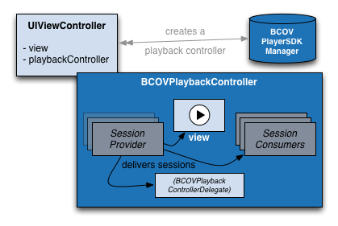

Brightcove Native Player for iOS Reference
Brightcove Player SDK for iOS, version 6.8.2.1421
Table of Contents
- Requirements
- Supported Platforms
- Noteworthy
- FairPlay
- Sidecar Subtitles
- Offline Playback
- Installation
- CocoaPods
- Manual Installaion
- Imports
- Quick Start
- Built-In PlayerUI Controls for iOS
- Built-In TV Player Controls for tvOS
- AirPlay
- Video 360
- Architectural Overview
- Play, Pause, and Seek
- Preloading Videos
- Source Selection (HLS, MP4, HTTP/HTTPS)
- Setting a Preferred Bitrate
- Obtaining Content and Ad Playback Information
- Handling Network Interruptions and Slowdowns
- Subclassing
- Values
- Retrieving Brightcove Assets Using the Playback Service
- View Strategy
- Playing Video In The Background
- Picture In Picture
- Thumbnail Scrubbing
- Tracking Errors
- Combining Plugins
- Buffer Optimization
- Using an AVPlayerViewController with a BCOVPlaybackController
- Playback Authorization Service
- VoiceOver Support
- Frequently Asked Questions
- Support
Requirements
- Xcode 11.0+
- ARC
Supported Platforms
iOS 11.0 and above.
tvOS 11.0 and above.
The Core SDK is localized for Arabic (ar), English (en), French (fr), German (de), Japanese (ja), Korean (ko), Spanish (es), Simplified Chinese (zh-Hans) and Traditional Chinese (zh-Hant). To gain the benefit of a localization, your app must also be localized for the same language and locale.
Noteworthy
All SDK components - the core and plugin frameworks - are released with the same version number. When upgrading any single component, upgrade all components to the same version.
CocoaPods Podspec names (since release 6.8.1)
Release 6.8.1 of the Brightcove Player SDK updates the Brightcove-Player-FreeWheel and Brightcove-Player-Omniture podspecs to install the dynamic version of BrightcovePlayerSDK. A -static podspec is now available for each plugin which will install the static version of BrightcovePlayerSDK along with the static version of the plugin framework itself. If there is no static version of a plugin, the dynamic version will be installed with the static version of BrightcovePlayerSDK.
| Podspec Name | Framework Type | Dependency |
|---|---|---|
| Brightcove-Player-Core | dynamic | - |
| Brightcove-Player-Core-static | static | - |
| Brightcove-Player-FreeWheel | static | Brightcove-Player-Core for iOS, Brightcove-Player-Core for tvOS |
| Brightcove-Player-FreeWheel-static | static | Brightcove-Player-Core-static for iOS, Brightcove-Player-Core for tvOS |
| Brightcove-Player-GoogleCast | static | Brightcove-Player-Core |
| Brightcove-Player-GoogleCast-static | static | Brightcove-Player-Core-static |
| Brightcove-Player-IMA | dynamic | Brightcove-Player-Core |
| Brightcove-Player-IMA-static | dynamic | Brightcove-Player-Core-static |
| Brightcove-Player-Omniture | static | Brightcove-Player-Core |
| Brightcove-Player-Omniture-static | static | Brightcove-Player-Core-static |
| Brightcove-Player-Pulse | dynamic | Brightcove-Player-Core |
| Brightcove-Player-Pulse-static | dynamic | Brightcove-Player-Core-static |
| Brightcove-Player-SSAI | dynamic | Brightcove-Player-Core |
| Brightcove-Player-SSAI-static | static | Brightcove-Player-Core-static |
FairPlay
Support for playing FairPlay-protected videos is integrated into the core BrightcovePlayerSDK framework. Refer to the FairPlay guide for full details about using FairPlay with the Brightcove Native Player SDK.
Sidecar Subtitles
Support for Sidecar Subtitles is integrated into the core BrightcovePlayerSDK framework. For full details about using Sidecar Subtitles with the Brightcove Native Player SDK, refer to the Sidecar Subtitles guide.
Video Downloads and Offline Playback
Since release 6.0.0, the Brightcove Native Player SDK allows you to download HLS videos, including those protected with FairPlay encryption, for playback later, whether online or offline. Refer to the app developer’s guide for full details:
iOS App Developer’s Guide to Video Downloading and Offline Playback with FairPlay
Installation
The Brightcove Player SDK provides two installation packages for iOS, a static library framework and a dynamic framework. Deployment is supported on iOS 11 and above.
The Brightcove Player SDK provides a dynamic framework to support tvOS 11.0 and above.
CocoaPods
You can use CocoaPods to add the Brightcove Player SDK to your project. You can find the latest Brightcove-Player-Core podspec here. The podspec supports both iOS and tvOS. CocoaPods 1.0 or newer is required and the latest version is recommended.
When using Brightcove CocoaPods in your project, add source 'https://github.com/brightcove/BrightcoveSpecs.git' to the start of your Podfile.
Specifying the default pod Brightcove-Player-Core will install the dynamic library framework. To install the static framework, append -static like this: pod 'Brightcove-Player-Core-static'.
Dynamic Framework example:
source 'https://github.com/CocoaPods/Specs'
source 'https://github.com/brightcove/BrightcoveSpecs.git'
platform :ios, '11.0'
use_frameworks!
target 'MyVideoPlayer' do
pod 'Brightcove-Player-Core'
end
Static Framework example:
source 'https://github.com/CocoaPods/Specs'
source 'https://github.com/brightcove/BrightcoveSpecs.git'
platform :ios, '11.0'
use_frameworks!
target 'MyVideoPlayer' do
pod 'Brightcove-Player-Core-static'
end
When updating your installation, it’s a good idea to refresh the local copy of your BrightcoveSpecs repository so that you have the latest podspecs locally, just as you would update your CococaPods master repository. Typically if you run pod update in Terminal this will happen automatically, or alternatively you can update explicitly with pod repo update.
Manual Installation
To add the Brightcove Player SDK to your project manually:
- Download the latest zipped release from our release page.
- Add
BrightcovePlayerSDK.frameworkto your project. Be sure to use the version corresponding to your target, iOS or tvOS. - On the “Build Settings” tab of your application target, ensure that the “Framework Search Paths” include the path to the framework. This should have been done automatically unless the framework is stored under a different root directory than your project.
On the “General” tab of your application target, add the following to the “Frameworks, Libraries, Embedded Content” section:
BrightcovePlayerSDK.framework
- (Dynamic Framework only) On the “General” tab of your application target, add ‘BrightcovePlayerSDK.framework’ to the “Embedded Binaries” section.
- (Dynamic Framework only) On the “Build Phases” tab, add a “Run Script” phase with the command
bash ${BUILT_PRODUCTS_DIR}/${FRAMEWORKS_FOLDER_PATH}/BrightcovePlayerSDK.framework/strip-frameworks.sh. Check “Run script only when installing”. This will remove unneeded architectures from the build, which is important for App Store submission. - (Static Framework only) On the “Build Settings” tab of your application target, add
-ObjCto the “Other Linker Flags” build setting. - (Static Framework only) Locate the file
bcovpuiiconfont.ttfwithin theBrightcovePlayerSDK.frameworkbundle and drag it directly into your project listing so that the font file becomes a part of your app. After dragging the file, be sure to add it to your app’s build target when prompted to do so. Once your app is built, the font file should reside in the app bundle at the same level as the app’s Info.plist file. The font file supplies some of theBrightcovePlayerUIinterface elements, but it does not need to be listed in the plist itself.
For reference, here are all the SDK components and corresponding URLs to help you locate and download the latest releases:
| Component | URL |
|---|---|
| Brightcove-Player-Core | https://github.com/brightcove/brightcove-player-sdk-ios/releases |
| Brightcove-Player-FreeWheel | https://github.com/brightcove/brightcove-player-sdk-ios-fw/releases |
| Brightcove-Player-IMA | https://github.com/brightcove/brightcove-player-sdk-ios-ima/releases |
| Brightcove-Player-Omniture | https://github.com/brightcove/brightcove-player-sdk-ios-omniture/releases |
| Brightcove-Player-Pulse | https://github.com/brightcove/brightcove-player-sdk-ios-pulse/releases |
| Brightcove-Player-SSAI | https://github.com/brightcove/brightcove-player-sdk-ios-ssai/releases |
Imports
The Brightcove Player SDK for iOS can be imported into code a few different ways:
@import BrightcovePlayerSDK;
#import <BrightcovePlayerSDK/BrightcovePlayerSDK.h>
#import <BrightcovePlayerSDK/[specific-class].h>
Quick Start
Playing video with the Brightcove Player SDK for iOS:
// ** Customize these values with your own account information **
static NSString * const kViewControllerPlaybackServicePolicyKey = @"...";
static NSString * const kViewControllerAccountID = @"...";
static NSString * const kViewControllerVideoID = @"...";
BCOVPlayerSDKManager *manager = [BCOVPlayerSDKManager sharedManager];
id<BCOVPlaybackController> controller = [manager createPlaybackController];
self.controller = controller; // store this to a strong property
[self.view addSubview:controller.view];
BCOVPlaybackService *service = [[BCOVPlaybackService alloc] initWithAccountId:kAccountId
policyKey:kPlaybackServicePolicyKey];
[service findVideoWithVideoID:kViewControllerVideoID
parameters:nil
completion:^(BCOVVideo *video,
NSDictionary *jsonResponse,
NSError *error) {
[controller setVideos:@[ video ]];
[controller play];
}];
You need to keep the controller from being automatically released at the end of the method. A common way to do this is to store a reference to the controller in a strong instance variable.
Built-in PlayerUI Controls
Since version 5.1.0, the Brightcove PlayerUI is fully integrated into the Core SDK framework. PlayerUI provides a fully-featured set of controls for playback and advertising, right out of the box.
The PlayerUI is quick to set up, displays ad controls for SSAI, Pulse and FreeWheel, and can be customized by creating your own layouts.
Setting up PlayerUI Controls
Follow the guidelines below for setting up the PlayerUI controls.
Create a property in your UIViewController to keep track of the BCOVPUIPlayerView. The BCOVPUIPlayerView will contain both the Playback Controller’s view, and the controls view.
// PlayerUI's Player View
@property (nonatomic) BCOVPUIPlayerView *playerView;
Create the BCOVPUIBasicControlView, and then the BCOVPUIPlayerView. This is where we associate the Playback Controller (and thus all the videos it plays) with the controls.
// Create and configure Control View.
BCOVPUIBasicControlView *controlView = [BCOVPUIBasicControlView basicControlViewWithVODLayout];
self.playerView = [[BCOVPUIPlayerView alloc] initWithPlaybackController:self.playbackController options:nil controlsView:controlView];
// Add BCOVPUIPlayerView to your video view.
[self.videoView addSubview:self.playerView];
You’ll need to set up the layout for the player view, you can do this with Auto Layout or the older Springs & Struts approach.
Springs & Struts:
Set the player view to match the video container from your layout (videoView) when it resizes.
self.playerView.frame = self.videoView.bounds;
self.playerView.autoresizingMask = UIViewAutoresizingFlexibleHeight | UIViewAutoresizingFlexibleWidth;
Auto Layout
Set the translatesAutoresizingMaskIntoConstraints on BCOVPUIPlayerView to NO.
self.playerView.translatesAutoresizingMaskIntoConstraints = NO;
Then add the constraints for the layout; setting the top, right, left and bottom anchors of your BCOVPUIPlayerView to equal that of videoView
[NSLayoutConstraint activateConstraints:@[
[self.playerView.topAnchor constraintEqualToAnchor:self.videoView.topAnchor],
[self.playerView.rightAnchor constraintEqualToAnchor:self.videoView.rightAnchor],
[self.playerView.leftAnchor constraintEqualToAnchor:self.videoView.leftAnchor],
[self.playerView.bottomAnchor constraintEqualToAnchor:self.videoView.bottomAnchor],
]];
Reminder: The PlayerUI uses a small font file for various graphics. If you are installing the static framework, and not using CocoaPods, be sure to add the file bcovpuiiconfont.ttf from the BrightcovePlayerSDK.framework bundle directly to your project listing so that the font file is copied into the app bundle
BCOVPUIPlayerViewOptions
The BCOVPUIPlayerViewOptions class allows you to customize some BCOVPlayerUI behavior at initialization. You can customize the following:
jumpBackIntervalThe time in seconds the player will seek back when the jump back button is pressed.hideControlsIntervalThe time in seconds after the last touch event, before the controls are hidden.hideControlsAnimationDurationThe time in seconds it takes for the controls to animate to hidden.showControlsAnimationDurationThe time in seconds it takes for the controls to animate to visible.learnMoreButtonBrowserStyleSetting that determines if tapping the “Learn More” button on an ad will display the clickthrough link in an external browser (default setting) or an internal browser.presentingViewControllerThe UIViewController subclass to use for presenting other view controllers (like the closed caption selection view controller).
Options can be set using the following method:
BCOVPlayerSDKManager *manager = [BCOVPlayerSDKManager sharedManager];
id<BCOVPlaybackController> controller = [manager createPlaybackController];
BCOVPUIPlayerViewOptions *options = [[BCOVPUIPlayerViewOptions alloc] init];
options.jumpBackInterval = 5;
BCOVPUIPlayerView *playerView = [[BCOVPUIPlayerView alloc] initWithPlaybackController:playbackController options:options];
Supplied Layouts
Three layouts are provided to support different types of video:
BCOVPUIControlLayout basicVODControlLayoutis a basic layout for general on-demand video streams.BCOVPUIControlLayout basicLiveControlLayoutis a layout for live video.BCOVPUIControlLayout basicLiveDVRControlLayoutis a layout for live video streams with DVR controls.
You typically set a new layout immediatley after your BCOVPUIPlayerView is created, but you can also set a new layout at any time. For example, you can set a new VOD layout like this:
playerView.controlsView.layout = [BCOVPUIControlLayout basicVODControlLayout]
Custom Layouts
In addition to the default layouts, you can create your own highly customized layouts by instantiating a new BCOVPUIControlLayout with your own design.
First, create the controls that will go in your layout using
BCOVPUIBasicControlView layoutViewWithControlFromTag:width:elasticity:. Each control is packaged in aBCOVPUILayoutViewthat determines the control spacing.You can set the
widthof each layout view to the default width (which is based on the type of control), or you can specify your own width.Use the
elasticityargument to determine how much the layout view containing the control reizes its width to fill the control bar.- An elasticity of zero means the size of the layout view will be fixed.
- An elasticity value greater than zero determines how much the layout view will grow to fill available space relative to all other elastic views in that control bar. A layout view with an elasticity value of 2.0 will grow twice as fast as a layout view with an elasticity value of 1.0. Typically a row of layout views will have at least one control with an elasticity greater than zero.
Here are examples of creating a variety of basic controls.
// Create various standard layout views
// Standard play/pause button
BCOVPUILayoutView *playbackLayoutView = [BCOVPUIBasicControlView layoutViewWithControlFromTag:BCOVPUIViewTagButtonPlayback width:kBCOVPUILayoutUseDefaultValue elasticity:0.0];
// Standard jump back button
BCOVPUILayoutView *jumpBackButtonLayoutView = [BCOVPUIBasicControlView layoutViewWithControlFromTag:BCOVPUIViewTagButtonJumpBack width:kBCOVPUILayoutUseDefaultValue elasticity:0.0];
// Current time indicator
BCOVPUILayoutView *currentTimeLayoutView = [BCOVPUIBasicControlView layoutViewWithControlFromTag:BCOVPUIViewTagLabelCurrentTime width:kBCOVPUILayoutUseDefaultValue elasticity:0.0];
// Time separator - typically the '/' character
BCOVPUILayoutView *timeSeparatorLayoutView = [BCOVPUIBasicControlView layoutViewWithControlFromTag:BCOVPUIViewTagLabelTimeSeparator width:kBCOVPUILayoutUseDefaultValue elasticity:0.0];
// Video duration label
BCOVPUILayoutView *durationLayoutView = [BCOVPUIBasicControlView layoutViewWithControlFromTag:BCOVPUIViewTagLabelDuration width:kBCOVPUILayoutUseDefaultValue elasticity:0.0];
// Slider bar used for scrubbing through the video
// The elasticity is set to 1 so that it can resize to fill available space
BCOVPUILayoutView *progressLayoutView = [BCOVPUIBasicControlView layoutViewWithControlFromTag:BCOVPUIViewTagSliderProgress width:kBCOVPUILayoutUseDefaultValue elasticity:1.0];
// Closed caption button
// This button is initially hidden ('removed'), and will be shown
// if closed captions or audio tracks are available.
BCOVPUILayoutView *closedCaptionLayoutView = [BCOVPUIBasicControlView layoutViewWithControlFromTag:BCOVPUIViewTagButtonClosedCaption width:kBCOVPUILayoutUseDefaultValue elasticity:0.0];
closedCaptionLayoutView.removed = YES;
// The full-screen button
BCOVPUILayoutView *screenModeLayoutView = [BCOVPUIBasicControlView layoutViewWithControlFromTag:BCOVPUIViewTagButtonScreenMode width:kBCOVPUILayoutUseDefaultValue elasticity:0.0];
// AirPlay button
// This button is initially hidden ('removed'), and will be shown
// if AirPlay devices are available.
BCOVPUILayoutView *externalRouteLayoutView = [BCOVPUIBasicControlView layoutViewWithControlFromTag:BCOVPUIViewTagViewExternalRoute width:kBCOVPUILayoutUseDefaultValue elasticity:0.0];
externalRouteLayoutView.removed = YES;
// Empty view - used as a spacer
BCOVPUILayoutView *spacerLayoutView1 = [BCOVPUIBasicControlView layoutViewWithControlFromTag:BCOVPUIViewTagViewEmpty width:1.0 elasticity:1.0];
// Empty view - used as a spacer
BCOVPUILayoutView *spacerLayoutView2 = [BCOVPUIBasicControlView layoutViewWithControlFromTag:BCOVPUIViewTagViewEmpty width:1.0 elasticity:1.0];
// Empty view - will have a custom UIImageView added as a subview
BCOVPUILayoutView *logoLayoutView1 = [BCOVPUIBasicControlView layoutViewWithControlFromTag:BCOVPUIViewTagViewEmpty width:80.0 elasticity:1.0];
// Empty view - will have a custom UIImageView added as a subview
BCOVPUILayoutView *logoLayoutView2 = [BCOVPUIBasicControlView layoutViewWithControlFromTag:BCOVPUIViewTagViewEmpty width:36.0 elasticity:0.0];
Note that you can also create an empty layout view, into which you can place your own view (logo, control, nothing, etc.). This code shows how to place a UIImage logo inside the logoLayoutView1 we created above.
// Create logo image inside an image view for display in control bar.
UIImage *logoImage1 = [UIImage imageNamed:@"myLogo"];
UIImageView *logoImageView1 = [[UIImageView alloc] initWithImage:logoImage1];
logoImageView1.autoresizingMask = UIViewAutoresizingFlexibleWidth | UIViewAutoresizingFlexibleHeight;
logoImageView1.contentMode = UIViewContentModeScaleAspectFit;
logoImageView1.frame = logoLayoutView1.frame;
// Add image view to our empty layout view.
[logoLayoutView1 addSubview:logoImageView1];
Now that there are various controls packaged in layout views, they are ordered into arrays, each of wihch represents a single line of controls, i.e. a control bar. Note that you can have different layouts for portrait and landscape orientations, so you will typically set up two different arrays of control bars.
In the standard layout for landscape orientation, controls are arranged in a single array, and then that array is stored in another array representing the entire set of controls.
NSArray *standardLayoutLine1 = @[ playbackLayoutView, jumpBackButtonLayoutView, currentTimeLayoutView, timeSeparatorLayoutView, durationLayoutView, progressLayoutView, spacerLayoutView1, logoLayoutView1, spacerLayoutView2, closedCaptionLayoutView, screenModeLayoutView, externalRouteLayoutView ];
NSArray *standardLayoutLines = @[ standardLayoutLine1 ];
In the compact layout for portrait orientation, two arrays of controls are created, one for each line. These arrays are packaged into another array representing the compact layout.
Note that the exact same objects are used for most of the controls in each layout. When this is done, and you switch between portrait and landscape orientations, the object will be moved to its new position using smooth animation.
NSArray *compactLayoutLine1 = @[ currentTimeLayoutView, progressLayoutView, durationLayoutView ];
NSArray *compactLayoutLine2 = @[ playbackLayoutView, jumpBackButtonLayoutView, spacerLayoutView1, closedCaptionLayoutView, screenModeLayoutView, externalRouteLayoutView, logoLayoutView2 ];
NSArray *compactLayoutLines = @[ compactLayoutLine1, compactLayoutLine2 ];
Finally, now that there are two layout configurations (one for full width, and one for compact width), you can create a new BCOVPUIControlLayout object, and set it in the player’s control view.
BCOVPUIControlLayout *customLayout = [[BCOVPUIControlLayout alloc] initWithStandardControls:standardLayoutLines compactControls:compactLayoutLines];
playerView.controlsView.layout = customLayout;
If you have controls that you need to show or hide frequently, you can set the removed property on that control’s layout view. When you have changed your controls, call setNeedsLayout on the playerView’s controlView:
logoLayoutView1.removed = YES;
[playerView.controlsView setNeedsLayout];
You can also customize several general BCOVPUIControlLayout properties:
controlBarHeightsets the size of each row of controls.horizontalItemSpacingsets the spacing between eachBCOVPUILayoutViewin each control bar.compactLayoutMaximumWidthdetermines which set of controls is used. If the control view is smaller thancompactLayoutMaximumWidth, the compact control set will be used, otherwise the standard controls will be used.
To change the set of controls that are displayed, you must create and install a new BCOVPUIControlLayout. New controls can be installed at any time.
More Customization Examples
For more examples of PlayerUI customization, you can look at the sample code in the PlayerUI folder of the BrightcoveOS GitHub repository:
Built-in TV Player Controls for tvOS
The Brightcove Native Player SDK includes built-in controls for playback in tvOS on Apple TV. For full details about using the built-in TV Player UI with the Brightcove Native Player SDK, see our TV Player guide.
AirPlay
Enable AirPlay functionality by setting the setAllowsExternalPlayback property on your BCOVPlaybackController to true. The AirPlay button will be displayed in the playback controls if AirPlay devices are found on your network.
Currently, IMA is the only plugin that supports AirPlay and only when using pre-roll and/or post-roll ads. Using AirPlay with the Pulse, SSAI or FreeWheel ad plugins may result in unexpected behavior.
If you also want to support AirPlay 2 and allow for multiple devices to be selected for audio output you will have to do a few additional things. First, you’ll need to configure AVAudioSession so that you can set the routeSharingPolicy. For example:
[AVAudioSession.sharedInstance setCategory:AVAudioSessionCategoryPlayback mode:AVAudioSessionModeMoviePlayback routeSharingPolicy:AVAudioSessionRouteSharingPolicyLongForm options:0 error:nil];
You will also need to configure at least one playback command via MPRemoteCommandCenter. At the very least you’ll want to configure both the pauseCommand and playCommand. For Example:
MPRemoteCommandCenter *center = MPRemoteCommandCenter.sharedCommandCenter;
[center.pauseCommand addTargetWithHandler:^MPRemoteCommandHandlerStatus(MPRemoteCommandEvent * _Nonnull event) {
[self.playbackController pause];
return MPRemoteCommandHandlerStatusSuccess;
}];
[center.playCommand addTargetWithHandler:^MPRemoteCommandHandlerStatus(MPRemoteCommandEvent * _Nonnull event) {
[self.playbackController play];
return MPRemoteCommandHandlerStatusSuccess;
}];
Devices that are running iOS 11 or later will take advantage of AVRoutePickerView which has two delegate methods. These delegate methods are passed through to BCOVPUIPlayerViewDelegate. The methods are:
- (void)routePickerViewWillBeginPresentingRoutes:(AVRoutePickerView *)routePickerView;
- (void)routePickerViewDidEndPresentingRoutes:(AVRoutePickerView *)routePickerView;
For more information on incorporating AirPlay 2 into your app please see the Getting Airplay 2 into Your App documentation.
Important Note: AirPlay 2 is only supported on devices running iOS 11.4 or later.
Video 360
The Native Player SDK includes support for interactively displaying 360 degree spherical videos. 360 videos should be tagged with a “projection” field property containing the value “equirectangular”. These videos will be loaded and played in the same way as other videos, but they will be displayed in an OpenGL ES layer instead of an AVPlayerLayer.
Note: “equirectangular” is the only projection format supported for 360 source videos at this time.
The PlayerUI also has built-in support for Video 360, providing default panning gestures, gyroscopic motion detection for the view, and a new Video 360 button that appears when a Video 360 asset is playing. This button appears only on iPhones, and lets you toggle betwen the normal view and a “VR Goggles” view, where the screen is split in two, with the same scene rendered for each eye so that the device can be used in a head-mounted configuration. On iPads no Video 360 button is needed because there is only a single mode of operation: motion detection with panning gesture support.
Supporting Video 360 is as simple as playing a video. When the “projection” field property is detected, the Native Player SDK will automatically handle setting up and displaying the video in OpenGL ES, and installing the Video 360 button when appropriate.
If you are playing 360 videos outside of Video Cloud, be sure to add a “projection” property to the BCOVVideo object with the value “equirectangular”.
To provide the best user experience with the VR Goggles mode, you should use a BCOVPUIPlayerViewDelegate method to detect when this mode is enabled. This allows you to force the device into landscape orientation (since that is the only orientation that makes sense for a VR Goggles view).
The following code shows how you could handle a forced orientation change when switching back and forth between a normal 360 view, and VR Goggles mode.
// Set this to YES when displaying a VR goggles video
@property (nonatomic) BOOL landscapeOnly;
// UIViewController override:
// Lets us control the orientation of the device
- (UIInterfaceOrientationMask)supportedInterfaceOrientations
{
if (self.landscapeOnly)
{
return UIInterfaceOrientationMaskLandscape;
}
return UIInterfaceOrientationMaskAll;
}
// BCOVPUIPlayerViewDelegate method
- (void)didSetVideo360NavigationMethod:(BCOVPUIVideo360NavigationMethod)navigationMethod
projectionStyle:(BCOVVideo360ProjectionStyle)projectionStyle
{
switch (projectionStyle)
{
case BCOVVideo360ProjectionStyleNormal:
NSLog(@"BCOVVideo360ProjectionStyleNormal");
self.landscapeOnly = NO;
break;
case BCOVVideo360ProjectionStyleVRGoggles:
NSLog(@"BCOVPUIVideo360NavigationDeviceMotionTracking");
self.landscapeOnly = YES;
{
UIDeviceOrientation currentDeviceOrientation = [UIDevice currentDevice].orientation;
switch (currentDeviceOrientation)
{
case UIDeviceOrientationLandscapeLeft:
case UIDeviceOrientationLandscapeRight:
// all good
break;
default:
{
// switch orientation
NSNumber *value = [NSNumber numberWithInt:UIInterfaceOrientationLandscapeLeft];
[[UIDevice currentDevice] setValue:value forKey:@"orientation"];
break;
}
}
}
break;
}
[UIViewController attemptRotationToDeviceOrientation];
}
The PlayerUI will install gestures to handle navigation around the 360 video, but if you are using your own controls you can set the view parameters of the virtual camera yourself. The BCOVPlaybackController protocol’s viewProjection property lets you set these parameters. The property is a BCOVVideo360ViewProjection class with basic virtual camera settings like pan, tilt, and zoom. To change settings, make a copy of the current instance, change the settings on the new instance, and then assign it back to the viewProjection property.
Architectural Overview

The entry point to the Brightcove Player SDK for iOS is the [BCOVPlayerSDKManager](Classes/BCOVPlayerSDKManager.html) singleton object. This Manager handles registration of plugin components and some other housekeeping tasks, but it primarily serves as an object factory. Your app’s view controller obtains a reference to the Manager, and uses it to create a [BCOVPlaybackController](Protocols/BCOVPlaybackController.html). The playback controller’s view property exposes a UIView containing the AVPlayerLayer object that ultimately presents your video content on the screen. The playback controller also accepts a [BCOVPlaybackControllerDelegate](Protocols/BCOVPlaybackControllerDelegate.html), which you can implement to respond to various video playback events.
The playback controller offers methods and properties to affect playback of the current video. However, internally, the playback controller delegates to a [BCOVPlaybackSession](Protocols/BCOVPlaybackSession.html) object. Playback sessions do the actual work of preparing and playing video content, and contain the video’s metadata and AVPlayer. The playback controller has mechanisms to advance from the current playback session to the next playback session, either automatically at the end of a video, or manually with a method call. Once the playback controller has advanced to a new session, the previous session is discarded and cannot be used again.
There are two other elements of the playback controller: a [BCOVPlaybackSessionProvider](Protocols/BCOVPlaybackSessionProvider.html), and a list of [BCOVPlaybackSessionConsumer](Protocols/BCOVPlaybackSessionConsumer.html)s. As the name would suggest, the playback session provider is responsible for creating playback sessions and delivering them to the playback controller. The playback controller then delivers the session to each of the playback session consumers in the list. Both the session provider and session consumer APIs are designed for use by plugin developers, and are not detailed in this document.
In addition to the playback functionality provided by the classes described above, there are a handful of value classes. These are used to hold data specific to the Player SDK for iOS. Each of these is described in more detail in its own section below.
Play, Pause, and Seek
The Brightcove Player SDK for iOS provides play, pause, and seek methods on the BCOVPlaybackController. It is important to use these methods instead of using the AVPlayer equivalent. In their default implementations, these objects forward the calls directly to the corresponding method on the AVPlayer. However, if you are using plugins, they may override the default behavior to add functionality. For example, if using an advertising plugin, calling [BCOVPlaybackController play] the first time might cause pre-roll to play before starting the content. To find out more about how a plugin may override the default behavior, please refer to each plugin README.md or by checking for a category extension on BCOVSessionProviderExtension that the plugin may add.
Calling play, pause, or seek on the AVPlayer directly may cause undefined behavior.
Preloading Videos
If desired you may choose to preload upcoming videos in a playlist. One possible approach is to double-buffer a list of videos using two playback controllers, for example:
- Initialize two playback controllers
- Set up your player view and assign one of the two playback controllers to the playerView’s playbackController property (now your active playback controller)
- Once your playlist is ready assign the playlist (or just the videos array property) to a property as we’ll need to access each video separately
- Get the first video in the videos array and give it to the active playback controller (
[self.playbackController1 setVideos:@[self.videos.firstObject]]) - Utilizing the
playbackController:didProgressTo:delegate method of the playback controller determine if the current video has progressed far enough to where you want to begin preloading the next video - Once you determine it’s time to preload get the next video in the videos array and set it on the alternate playback controller
- Once the current video has completed set the playbackController on the playerView to the alternate playback controller
- Rinse and repeat steps 5-7
For a working example you may download our VideoPreloading sample app from our Player Samples repository.
Note: You might want to take into account the amount of memory available on the client’s device and speed of their connection. If they are not on Wifi, preloading a video may affect the current video’s network resources.
Source Selection (HLS, MP4, HTTP/HTTPS)
The Brightcove Player SDK for iOS provides clients the ability to attach multiple url and delivery types (BCOVSource) to a single video (BCOVVideo). For example, if your videos are being retrieved by the Playback Service, there may be a mix of HLS or MP4 renditions for a single video, along with HTTP and HTTPS versions. Which one of these sources that get selected is determined by a source selection policy block. The default source selection policy will select the first HLS BCOVSource on each BCOVVideo, with HTTPS sources preferred over HTTP.
Source selection can be overridden by creating a BCOVBasicSessionProviderOptions and using it to create a BCOVBasicSessionProvider. For example:
BCOVPlayerSDKManager *sdkManager = [BCOVPlayerSDKManager sharedManager];
BCOVBasicSessionProviderOptions *options = [[BCOVBasicSessionProviderOptions alloc] init];
options.sourceSelectionPolicy = <policy>
id<BCOVPlaybackSessionProvider> provider = [sdkManager createBasicSessionProviderWithOptions:options];
idBCOVPlaybackController playbackController = [sdkManager createPlaybackControllerWithSessionProvider:provider viewStrategy:nil];
If this default selection policy does not work for you, there are a few alternatives to selecting a source:
If retrieving videos from Video Cloud via the Playback Service, before calling
[BCOVPlaybackController setVideos:], use the update method on theBCOVVideoto only contain the source you want (see the “Values” section for more info).You can use the helper method
[BCOVBasicSourceSelectionPolicy sourceSelectionHLSWithScheme:scheme]to create a policy that prefers a specific scheme. This is the method used to create the default source selection policy that prefers HTTPS.Similar to updating the video object, you may also implement your own source selection block.
options.sourceSelectionPolicy = ^ BCOVSource *(BCOVVideo *video) { <Check video.sources for source> <Return source> };
Please be aware there are App Store limitations regarding the use of MP4 videos. Check the latest Apple Developer information for details.
Setting a Preferred Bitrate
The Brightcove Player SDK for iOS provides a way to set the preferred bitrate for a video. You can create a BCOVPreferredBitrateConfig object that contains your desired bitrate options, along with some configuration for the view controller which is created to display the options.
The title for the menu is optional. The bitrate options are an array of NSDictionary’s with each dictionary having one key:value pair. The key will be used as the option name, and the value is an NSNumber with the bitrate for that option in bps (bits per second). The bitrates you enter are values that can be mapped to bitrates of the renditions of your video assets. You can learn more about renditions in Ingest Profiles Best Practices.
Here is an example:
BCOVPUIPlayerViewOptions *options = [[BCOVPUIPlayerViewOptions alloc] init];
options.preferredBitrateConfig = [BCOVPreferredBitrateConfig configWithMenuTitle:@"Select an Option" andBitrateOptions:@[@{@"Auto":@(0)}, @{@"Setting 1":@(aBitrateValue)}, @{@"Setting 2":@(aBitrateValue)}]];
When the end-user selects one of the options, the preferredPeakBitRate property of the current AVPlayerItem will be set to the option’s value. If the video is in a playlist, the next video played will also have the preferredPeakBitRate value set.
After setting a non-zero value for preferredPeakBitRate you may not notice a difference in quality until AVPlayer has reached the end of its current buffered cache.
You may additionally use the configWithMenuTitle:bitrateOptions:andIndexofInitialSelection: initializer that provides the ability to set the index of your preferred initial value. The index should correlate to the index of the desired option in the bitrateOptions array.
You may additionally use the setPreferredPeakBitRate: method on your BCOVPlaybackController object to programatically set the preferred bitrate for the current and future sessions.
NOTE: End-users must be given a way to return to the default value (0) of preferredPeakBitRate. You can do this by providing an option with a bitrate value of 0. If you do not provide a bitrate option of 0 an “Automatic” option will be appended to your list of options for the end-user.
Please see Apple’s documentation on preferredPeakBitRate for more information.
Obtaining Content and Ad Playback Information
The Brightcove Player SDK for iOS provides two mechanisms for obtaining playback information. The playback controller provides a delegate property that implements [BCOVPlaybackControllerDelegate](Protocols/BCOVPlaybackControllerDelegate.html). A delegate can implement these optional methods to get notified of playback metadata like progress, duration changes, and other events. If an ad plugin is installed, it may also use this delegate to provide information about ad playback. The lifecycle event delegate method provides events to signal changes in playback state. For example, when a player goes from the paused state to the playing state, the lifecycle event delegate method will be called with the kBCOVPlaybackSessionLifecycleEventPlay event. The default Lifecycle events are declared in [BCOVPlaybackSession](Protocols/BCOVPlaybackSession.html). Plugins provided by Brightcove add additional lifecycle events which are defined in each plugin.
The playback controller allows for a single delegate. In many cases, this will be enough to retrieve information; the delegate implementations can disseminate values and events to different parts of the app as necessary. In cases where multiple delegates would be required, as is the case when developing a plugin, the [BCOVPlaybackSessionConsumer](Protocols/BCOVPlaybackSessionConsumer.html) delegates provide equivalent functionality to the [BCOVPlaybackControllerDelegate](Protocols/BCOVPlaybackControllerDelegate.html) methods, including ad data.
Here is an example of how one might use BCOVPlaybackSessionConsumer to create an analytics plugin:
@interface XYZAnalytics : NSObject BCOVPlaybackSessionConsumer
@end
@implementation XYZAnalytics
- (void)playbackSession:(idBCOVPlaybackSession)session didProgressTo:(NSTimeInterval)progress
{
//react to progress event
}
@end
To use the plugin:
BCOVPlayerSDKManager *sdkManager = [BCOVPlayerSDKManager sharedManager];
id<BCOVPlaybackController> controller = [sdkManager createPlaybackController];
XYZAnalytics *analytics = [[XYZAnalytics alloc] init];
[controller addSessionConsumer:analytics];
Handling Network Interruptions and Slowdowns
When the application experiences network interruptions, the AVPlayer used by the BCOVPlaybackController may stop attempting to recover if the interruption lasts too long. If this occurs, the lifecycle delegate method will be called with a kBCOVPlaybackSessionLifecycleEventFailedToPlayToEndTime event. When this event occurs, playback will not recover automatically. In order to recover from this event, you will need to detect when the network recovers in your client code.
Once you have determined that the network has recovered, you can use - [[BCOVPlaybackController resumeVideoAtTime:withAutoPlay:]](Protocols/BCOVPlaybackController.html#//api/name/resumeVideoAtTime:withAutoPlay:) to re-initialize the player. You will need to keep track of where you want to resume to. The player will make its best effort to suppress lifecycle events and progress events, in order to prevent ads from replaying or from analytics being interfered with.
Upon calling - [[BCOVPlaybackController resumeVideoAtTime:withAutoPlay:]](Protocols/BCOVPlaybackController.html#//api/name/resumeVideoAtTime:withAutoPlay:), the player will send a lifecycle event of type kBCOVPlaybackSessionLifecycleEventResumeBegin. kBCOVPlaybackSessionLifecycleEventResumeComplete will be sent if this action succeeds, otherwise kBCOVPlaybackSessionLifecycleEventResumeFail will be sent.
You must wait before calling - [[BCOVPlaybackController resumeVideoAtTime:withAutoPlay:]](Protocols/BCOVPlaybackController.html#//api/name/resumeVideoAtTime:withAutoPlay:) a second time until you have received either kBCOVPlaybackSessionLifecycleEventResumeComplete or kBCOVPlaybackSessionLifecycleEventResumeFail from the previous call. You may wish to impose a retry limit, before giving the user a message that their network is too unstable.
When the AVPlayer is still able to access the network, but the video stalls because the network is too slow, the lifecycle delegate method will be called with a kBCOVPlaybackSessionLifecycleEventPlaybackStalled event. When playback is able to resume, the lifecycle delegate method will be called with a kBCOVPlaybackSessionLifecycleEventPlaybackRecovered event. These events only cover the case where normal playback stopped and does not cover buffering that occurs during a seek or initial load of the video.
When the video is initially loading, when a seek occurs, or when playback stalls due to a slow network, the lifecycle delegate method will be called with a kBCOVPlaybackSessionLifecycleEventPlaybackBufferEmpty event. When playback is able to resume, the lifecycle delegate method will be called with a kBCOVPlaybackSessionLifecycleEventPlaybackLikelyToKeepUp event.
Subclassing
Except where explicitly documented otherwise, none of the classes in the Player SDK for iOS are designed to be subclassed. Creating a subclass of any SDK class that is not explicitly designed to be subclassed, especially any of the value classes, could result in unpredictable behavior.
Values
Also known as “model objects”, these classes (BCOVPlaylist, BCOVVideo, BCOVSource, BCOVCuePoint, BCOVCuePointCollection) are used to represent data in the Player SDK for iOS. It is crucial to understand that these data types are treated as values, rather than identities. By this, we mean that if you have two instances of a value class which have the exact same data, they represent the same idea or value, even though they are technically two different objects at separate memory addresses. In other words, neither SDK code nor your client code should ever use identity comparisons (“pointer equality”) with value objects. Instead, each value class implements -isEqual: and provides a class-specific equality method overload, either of which should be used instead.
This is bad:
if (myVideo == session.video) // Could lead to bugs!
These are good (and functionally equivalent):
if ([myVideo isEqualToVideo:session.video])
if ([myVideo isEqual:session.video])
The internals of the Player SDK for iOS may do such things as memoize values or make defensive copies, so relying on the pointer address to check for equality will end up causing you pain.
Another quality of value classes in the Player SDK for iOS is that they are immutable. Once you have an instance of a value, you should not try to subvert this immutability in any way, as it may lead to unpredictable behavior. If in your code you wish to “modify” a value in some fashion, your only recourse is to create a new value. As a convenience to help clients obtain “modified” values, each of the value classes offers an -update: method which takes a block that allows you to operate on a mutable copy of the original value.
Here is an example of using this method to create a “modified” version of an existing video object, but with different properties:
BCOVVideo *video1; // (properties include a key "foo" whose value is "bar")
BCOVVideo *video2 = [video1 update:^(idBCOVMutableVideo mutable) {
mutable.properties = @{ @"foo": @"bar" };
}];
NSLog(@"foo is %@", video1.properties[@"foo"]); // prints "foo is bar"
NSLog(@"foo is %@", video2.properties[@"foo"]); // prints "foo is quux"
// Both video1 and video2 are still immutable objects:
video1.properties = otherDictionary; // causes compiler error
video2.properties = otherDictionary; // causes compiler error
As you can see in the example, video1 has not been changed by the -update method call. Instead, this method returns a copy of video1, except with the modifications made in the body of the block. You should never allow the mutable copy to escape the block (such as by assigning it to a __block variable), instead use the immutable object returned by the -update method after you have made your modifications.
Retrieving Brightcove Assets Using the Playback Service
The playback service class, BCOVPlaybackService, provides functionality for retrieving your Brightcove video assets and playlists via the Brightcove Playback API , including rich metadata such as text tracks, previews, and thumbnails. The following example shows how to retrieve a video with a video ID. Methods for retrieving a video or playlist with that video’s reference ID are also available.
[1] NSString *policyKey = <your-policy-key>;
NSString *accountId = <your-account-id>;
NSString *videoID = <your-video-id>;
BCOVPlayerSDKManager *manager = [BCOVPlayerSDKManager sharedManager];
id<BCOVPlaybackController> controller = [manager createPlaybackControllerWithViewStrategy:nil];
[self.view addSubview:controller.view];
BCOVPlaybackService *playbackService = [[BCOVPlaybackService alloc] initWithAccountId:accoundId
policyKey:policyKey];
[playbackService findVideoWithVideoID:videoID
parameters:nil
completion:^(BCOVVideo *video,
NSDictionary *jsonResponse,
NSError *error) {
[controller setVideos:@[ video ]];
[controller play];
}];
- The playback service requests policy key for authentication. To learn more about policy key and how to obtain one, please refer to the policy key documentation.
**NOTE: If you are using the Playback Authorization Service please review the section of this README related to that feature.
Playlist Paging
For BCOVPlaybackService` methods that return a playlist, you can request a partial playlist, or “pages” from the playlist by specifying a limit and offset parameter in the parameters dictionary. The limit specifies the maximum number of videos that will be returned, and the offset specifies the index into the playlist at which videos will be returned.
For example, if you have a playlist with 100 videos, you can request only 6 videos starting at video number 10 as follows:
NSDictionary *parameters =
@{
@"limit": @6,
@"offset": @10
};
[playbackService findPlaylistWithPlaylistID:playlistID
parameters: parameters
completion:^(BCOVPlaylist *playlist,
NSDictionary *jsonResponse,
NSError *error) {
[controller setVideos: playlist];
[controller play];
}];
View Strategy
The BCOVPlaybackController object is constructed with a view strategy, which allows you, as the client of the SDK, to define the exact UIView object that is returned from the playback controller’s view property. This is important when using plugins that affect the playback controller’s view, such as an advertising plugin that overlays the video view with an ad view.
Many apps will have no need to create a view strategy, and can simply pass nil when creating a new playback controller. This will create a standard video view in the playback controller.
The BCOVPlaybackControllerViewStrategy typedef aliases (and documents) this more complex block signature:
objc
UIView *(^)(UIView *videoView, idBCOVPlaybackController playbackController);
This signature describes an Objective-C block that returns a UIView and takes two parameters: a UIView and a playback controller. The return value is the UIView object that the playback controller’s view property will point to. The first parameter is an UIView that contains the video layer, the UIView will show the video. The second parameter is the playback controller object to which the view strategy has been given, the playback controller can be used to add necessary session consumers such as video controls or ad controls.
Example of view strategy implementation:
```objc
BCOVPlaybackControllerViewStrategy viewStrategy = ^(UIView *videoView, id
// Create some custom controls for the video view,
// and compose both into a container view.
[1] UIView<BCOVPlaybackSessionConsumer> *myControlsView = [[MyControlsView alloc] init];
[2] UIView *controlsAndVideoView = [[UIView alloc] init];
[3] [controlsAndVideoView addSubview:videoView];
[controlsAndVideoView addSubview:myControlsView];
// Compose the container with an advertising view
// into another container view.
[4] UIView<BCOVPlaybackSessionConsumer> *adView = [[SomeAdPluginView alloc] init];
[5] UIView *adAndVideoView = [[UIView alloc] init];
[6] [adAndVideoView addSubview:controlsAndVideoView];
[adAndVideoView addSubview:adView];
[7] [playbackController addSessionConsumer:myControlsView];
[playbackController addSessionConsumer:adView];
// This container view will become `playbackController.view`.
return adAndVideoView;
};
``
Breaking the code down into steps:
[1] Create a custom controls view that conforms to the BCOVPlaybackSessionConsumer protocol. BCOVPlaybackSessionConsumerprotocol allows to receive basic playback information for each video in addition to advertising.
[2] Create a container view for the video view and custom controls.
[3] Add as a subview the video container and the custom controls. The hierarchy is composed in the same order that views are added.
[4] Create an ad controls view that conforms to the BCOVPlaybackSessionConsumer` protocol.
[5] Create a container view for the video view and controls, and the advertising view.
[6] Add as a subview the video container and the ad controls view.
[7] Register the custom controls view and the ad controls view as session consumers using the playback controller object returned by the block.
There is one caveat to using a view strategy: you must not access the playback controller’s view property from within the view strategy block. Since the block is being called because the playback controller’s view property was accessed for the first time, accessing the view property again within the view strategy block will cause your program to crash.
Playing Video In The Background
By default, when an iOS application is sent to the background, or the device is locked, iOS will pause any video that is playing. To change this behavior, set the allowsBackgroundAudioPlayback property of the BCOVPlaybackController object to YES. (The default value is NO, indicating playback will pause in the background.)
You should also follow the guidelines set by Apple in Technical Q&A QA1668 to set the proper background modes and audio session category for your app.
It’s important that the AVPlayerLayer be detached from the AVPlayer before the app is switched to the background (and reattached when the app returns to the foreground). The Brightcove Player SDK will handle this for you when allowsBackgroundAudioPlayback is set to YES.
Finally, when playing background videos (and particularly when using playlists), you should use the iOS MPRemoteCommandCenter API to give the user playback control on the lock screen and in the control center.
Picture in Picture
To enable Picture-in-Picture in your application, set the showPictureInPictureButton property of the BCOVPUIPlayerViewOptions object to YES when instantiating your BCOVPUIPlayerView object. The Picture-in-Picture button will then be displayed in the controls bar on any device that support it.
For Picture-in-Picture to work properly you will need to ensure that the Audio, AirPlay, and Picture in Picture mode is turned in the Background Modes section of the target Capabilities tab of your project. You should also follow the guidelines set by Apple in Technical Q&A QA1668 to set the proper background modes and audio session category for your app.
Some AVPictureInPictureControllerDelegate methods are passed along via BCOVPUIPlayerViewDelegate. These methods are:
- (void)pictureInPictureControllerDidStartPictureInPicture:(AVPictureInPictureController *)pictureInPictureController;
- (void)pictureInPictureControllerDidStopPictureInPicture:(AVPictureInPictureController *)pictureInPictureController;
- (void)pictureInPictureControllerWillStartPictureInPicture:(AVPictureInPictureController *)pictureInPictureController;
- (void)pictureInPictureControllerWillStopPictureInPicture:(AVPictureInPictureController *)pictureInPictureController;
- (void)pictureInPictureController:(AVPictureInPictureController *)pictureInPictureController failedToStartPictureInPictureWithError:(NSError *)error
To implement your own Picture-in-Picture behavior, keep the pictureInPictureActive property of BCOVPlaybackController updated with the Picture-in-Picture status. If you are using the AVPictureInPictureController, you can use the pictureInPictureControllerDidStartPictureInPicture: and pictureInPictureControllerDidStopPictureInPicture: delegate methods to update this property.
If you have autoPlay and autoAdvance enabled on your BCOVPlaybackController and picture-in-picture is active while the app is in the background and the current video completes, the autoPlay behavior will be ignored and require the app to be re-opened. Similarly, if the app is in the foreground while picture-in-picture is active when the current video completes the picture-in-picture controller will close and playback will begin normally.
You can read more about implmeneting Picture-in-Picture in Apple’s Adopting Picture in Picture in a Custom Player documentation.
Important: The Brightcove Native Player SDK’s Picture-in-Picture functionality does not support videos with ad playback. Trying to use a video with ads with the Picture-in-Picture functionality active will result in unexpected behavior.
Thumbnail Scrubbing
Thumbnail scrubbing allows users to drag the playhead along the timeline and view thumbnails as a preview of the associated content. This gives users the ability to quickly navigate a video file and find the content that they are interested in.
This feature is also referred to by Apple as Trick Play, and is referenced in their HLS Authoring Specification.
This feature is enabled by default. If you wish to disable thumbnail scrubbing you can do so by setting the thumbnailScrubbingEnabled property on your BCOVPlaybackController to NO.
self.playbackController.thumbnailScrubbingEnabled = NO;
You can customize the layout of the thumbnail preview by making use of a delegate method with your BCOVPUIPlayerView or BCOVTVPlayerView.
On iOS you can adjust the height, width and vertical offset:
- (void)setupPlayerView
{
BCOVPUIPlayerView *playerView = [[BCOVPUIPlayerView alloc] initWithPlaybackController:nil];
playerView.delegate = self;
...
}
#pragma mark - BCOVPUIPlayerViewDelegate
- (CGRect)playerViewShouldDisplayThumbnailPreviewWithRect:(BCOVPUIPlayerView *)playerView
{
CGFloat width = 100;
CGFloat height = 56;
CGFloat verticalOffset = -60;
CGFloat modifier = 1;
if (UI_USER_INTERFACE_IDIOM() == UIUserInterfaceIdiomPad)
{
modifier = 2;
}
return CGRectMake(0, verticalOffset * modifier, width * modifier, height * modifier);
}
On tvOS you can adjust the height and width:
- (void)setupPlayerView
{
self.playerView = [[BCOVTVPlayerView alloc] initWithOptions:nil];
self.playerView.delegate = self;
...
}
#pragma mark - BCOVTVPlayerViewDelegate
- (CGSize)playerViewShouldDisplayThumbnailPreviewWithSize:(BCOVTVPlayerView *)playerView
{
CGSize size = self.view.frame.size;
size.width = size.width / 6;
size.height = size.height / 6;
return size;
}
Thumbnail scrubbing is only available for online videos; downloaded/offline videos do not support this feature.
Tracking Errors
Playback errors are typically handled and reported through video playback events from the playback controller. If you need to dig deeper and track problems with particular videos or app sessions, you can take advantage of the Brightcove Player SDK’s session ID. The session ID is a property of the BCOVPlayerSDKManager that you can retrieve like this:
NSString *sdkSessionID = BCOVPlayerSDKManager.sharedManager.sessionID;
The session ID is a unique string that does not change during the app life cycle. This string is reported with various other analytics data to the Brightcove metrics servers. If you are having problems with a particular app instance, or video, you can record the session ID and send it back to your own company servers. Then you can send the session ID, video ID, and any other pertinent data to Brightcove service engineers to help diagnose any issues.
Combining Plugins
If you need to combine Player SDK plugins, for example to add subtitles to a DRM-protected video which plays ads managed by Google IMA, BCOVSessionProviders from each plugin are created and chained together and the chain is used to construct the BCOVPlaybackController.
BCOVPlayerSDKManager *sdkManager = [BCOVPlayerSDKManager sharedManager];
IMASettings *imaSettings = [[IMASettings alloc] init];
imaSettings.ppid = kViewControllerIMAPublisherID;
imaSettings.language = kViewControllerIMALanguage;
imaSettings.enableBackgroundPlayback = self.allowBackgroundAudioPlayback;
IMAAdsRenderingSettings *renderSettings = [[IMAAdsRenderingSettings alloc] init];
renderSettings.webOpenerPresentingController = self;
BCOVIMAAdsRequestPolicy *adsRequestPolicy =
[BCOVIMAAdsRequestPolicy videoPropertiesVMAPAdTagUrlAdsRequestPolicy];
// create the sidecar subtitles session provider. it has no upstream session provider.
id<BCOVPlaybackSessionProvider> *sidecarSessionProvider =
[sdkManager createSidecarSubtitlesSessionProviderWithUpstreamSessionProvider:nil];
// create the IMA session provider with an upstream sidecar subtitles session provider.
id<BCOVPlaybackSessionProvider> *imaSessionProvider =
[sdkManager createIMASessionProviderWithSettings:imaSettings
adsRenderingSettings:renderSettings
adsRequestPolicy:adsRequestPolicy
adContainer:self.playerView.contentOverlayView
companionSlots:nil
upstreamSessionProvider:sidecarSessionProvider];
// create the playback controller using the session provider chain.
id<BCOVPlaybackController> *playbackController =
[sdkManager createPlaybackControllerWithSessionProvider:imaSessionProvider
viewStrategy:nil];
Buffer Optimization
Overview
Developers have control over the size of the forward playback buffer used by the AVPlayer. This is done by setting the preferredForwardBufferDuration property in the AVPlayerItem class.
By default, the Brightcove Native Player SDK sets the preferredForwardBufferDuration property in a way that optimizes overall bandwidth without sacrificing playback quality. This behavior can be overridden with your own values.
Default Behavior
Everyone pays for bandwidth, so it’s important to reduce bandwidth consumption without affecting playback quality. New with version 5.2.0, the Brightcove Native Player SDK manages the buffer size for you dynamically as the video plays.
Prior to iOS 10, the AVPlayer buffered as much video data as it practicably could, up to around 50 Megabytes. This is fine for the video viewing model where a user selects a video and then watches it until the end, but many modern apps now “tease” videos with autoplay, hoping to secure engagement after a few seconds. A lot of users simply move on to different videos. With aggressive buffering you can end up with several minutes of buffered video that are thrown away with each video impression.
The Brightcove Native Player SDK addresses this problem by starting the video with a small baseline buffer, and then increasing it as the user watches more of the video. After a certain point, the buffer size is capped since it is not practical or helpful to make it too large.
Modifying The Default Behavior
If you want to keep the default behavior of the Brightcove Native Player SDK, but modify the minimum and maximum values used for the buffer sizes, you can do the following when setting up the BCOVPlaybackController:
// Create mutable dictionary to hold new values
NSMutableDictionary *options = self.playbackController.options.mutableCopy;
// Set new values in dictionary
options[kBCOVBufferOptimizerMethodKey] = @(BCOVBufferOptimizerMethodDefault);
options[kBCOVBufferOptimizerMinimumDurationKey] = @(min);
options[kBCOVBufferOptimizerMaximumDurationKey] = @(max);
// Set new dictionary in your playback controller
self.playbackController.options = options;
These options should be set before calling -BCOVPlaybackController setVideos:.
min and max values:
- These are floating point values that you can set as the new minimum and maximum buffer durations.
- If the values are set too small, playback may stall under erratic network conditions.
- If the values are set too large, the
AVPlayermay buffer data that is never viewed. - Testing based on your expected use cases is important.
- Values are specified in seconds of time, and must be greater than or equal to 1.0. (Zero is a special value in the
AVPlayerItemthat tells theAVPlayerto determine its own buffer size.
Turning Off Buffer Optimization
If you do not want any buffer optimization active in your current playback session, you can use the same technique, but set the optimziation method to “None” as follows:
// Create mutable dictionary to hold new values
NSMutableDictionary *options = self.playbackController.options.mutableCopy;
// Set new values in dictionary
options[kBCOVBufferOptimizerMethodKey] = @(BCOVBufferOptimizerMethodNone);
// Set new dictionary in your playback controller
self.playbackController.options = options;
With the method set to “None”, iOS will maintain full control of the forward buffer size.
Implementing Your Own Buffer Optimization Method
If you want to set your own buffer size for playback, first turn off buffer optimization as described in the previous section. Then, you can implement the following BCOVPlaybackController delegate method:
- (void)playbackController:(id<BCOVPlaybackController>)controller didAdvanceToPlaybackSession:(id<BCOVPlaybackSession>)session
{
// Make sure the property exists on the current AVPlayerItem.
if ([session.player.currentItem respondsToSelector:NSSelectorFromString(@"preferredForwardBufferDuration")])
{
// Set your preferredForwardBufferDuration value here.
session.player.currentItem.preferredForwardBufferDuration = newPreferredForwardBufferDurationValue;
}
}
If you want to change the buffer size dynamically over time, you can set session.player.currentItem.preferredForwardBufferDuration in the BCOVPlaybackController’s progress delegate method in a similar fashion:
- (void)playbackController:(id<BCOVPlaybackController>)controller playbackSession:(id<BCOVPlaybackSession>)session didProgressTo:(NSTimeInterval)progress
{
// Make sure the property exists on the current AVPlayerItem.
if ([session.player.currentItem respondsToSelector:NSSelectorFromString(@"preferredForwardBufferDuration")])
{
// Set preferredForwardBufferDuration based on your own logic here
session.player.currentItem.preferredForwardBufferDuration = newPreferredForwardBufferDurationValue;
}
}
Note: Apple specifically put “preferred” in preferredForwardBufferDuration because you can set any value you want, but generally speaking the AVPlayer player will use it only as a guideline. Also keep in mind that setting it to zero returns full control of the buffer size to the AVPlayer.
Using an AVPlayerViewController with a BCOVPlaybackController
Overview
You can use the AVPlayerViewController instead of the AVPlayerLayer used by the BCOVPlaybackSession class. Using the AVPlayerViewController allows the player to use the native iOS and tvOS player controls, but there are limitations to this approach (see below).
To use the AVPlayerViewController, you can set a BCOVPlaybackController dictionary property called kBCOVAVPlayerViewControllerCompatibilityKey:
BCOVPlayerSDKManager *sdkManager = [BCOVPlayerSDKManager sharedManager];
idBCOVPlaybackController playbackController;
NSMutableDictionary *mutableOptions = self.playbackController.options.mutableCopy;
// To use the AVPlayerViewController
mutableOptions[kBCOVAVPlayerViewControllerCompatibilityKey] = @YES;
// To use the BCOVPlaybackSession's AVPlayerLayer
// mutableOptions[kBCOVAVPlayerViewControllerCompatibilityKey] = @NO;
self.playbackController.options = mutableOptions;
The default value of kBCOVAVPlayerViewControllerCompatibilityKey is @NO, which means that a BCOVPlaybackController created without this dictionary property explicitly set will use the BCOVPlaybackSession’s AVPlayerLayer by default.
Sample Projects
We have sample projects demonstrating the use of AVPlayerViewController with the Brightcove iOS SDK. You can find the iOS sample project here and the tvOS sample project here.
Limitations to Using the AVPlayerViewController
Advertising:
The Brightcove IMA and FreeWheel ad plugins are compatible when using AVPlayerViewController. You can use the AVPlayerViewController’s contentOverlayView for the view in which to display ads.
You may wish to hide/show the AVPlayerViewController’s playback controls before and after ads play:
- (void)playbackController:(id<BCOVPlaybackController>)controller playbackSession:(id<BCOVPlaybackSession>)session didEnterAdSequence:(BCOVAdSequence *)adSequence
{
self.avpvc.showsPlaybackControls = NO;
}
- (void)playbackController:(id<BCOVPlaybackController>)controller playbackSession:(id<BCOVPlaybackSession>)session didExitAdSequence:(BCOVAdSequence *)adSequence
{
self.avpvc.showsPlaybackControls = YES;
}
The Brightcove SSAI and Pulse ad plugins are not currently compatible with AVPlayerViewController.
Analytics:
When using the AVPlayerViewController, the video_engagement events sent to the Brightcove Analytics server will report 0 for player_width and player_height.
Playback Authorization Service
If you are using the Playback Authorization Service you will need to use the playback service methods that allow you to pass in an authorization token.
- (void)findPlaylistWithPlaylistID:(NSString *)playlistID authToken:(NSString *)authToken parameters:(NSDictionary *)parameters completion:(void (^)(BCOVPlaylist *playlist, NSDictionary *jsonResponse, NSError *error))completionHandler;
- (void)findPlaylistWithReferenceID:(NSString *)referenceID authToken:(NSString *)authToken parameters:(NSDictionary *)parameters completion:(void (^)(BCOVPlaylist *playlist, NSDictionary *jsonResponse, NSError *error))completionHandler;
- (void)findVideoWithVideoID:(NSString *)videoID authToken:(NSString *)authToken parameters:(NSDictionary *)parameters completion:(void (^)(BCOVVideo *video, NSDictionary *jsonResponse, NSError *error))completionHandler;
- (void)findVideoWithReferenceID:(NSString *)referenceID authToken:(NSString *)authToken parameters:(NSDictionary *)parameters completion:(void (^)(BCOVVideo *video, NSDictionary *jsonResponse, NSError *error))completionHandler;
Note: In the case of playlists, all videos in the playlist must use the same token. In a subsequent release, assigning a different token to each video in a playlist will be possible. You will be responsible for maintaining the mapping between video id and token.
VoiceOver Support
VoiceOver is supported out-of-the-box for the playback controls. By default, if VoiceOver is enabled, the BCOVPlayerUI control view will not auto-hide. Using the double-tap VoiceOver activation gesture on the playback controller’s view will toggle the visibility of the control view. There is an associated accessibilityHint that is set on the playback controller’s view. The accessibilityLabel of each BCOVPlayerUI control can be customized within your application.
To change the accessibilityLabel values of any of the buttons in the control view you must set an object to be a BCOVPUIButtonAccessibilityDelegate like this:
[self.playerView.controlsView setButtonsAccessibilityDelegate:self];
You must then have that object conform to the BCOVPUIButtonAccessibilityDelegate protocol by implmenting the - (NSString *)accessibilityLabelForButton:(BCOVPUIButton *)button isPrimaryState:(BOOL)isPrimaryState method similar to this:
- (NSString *)accessibilityLabelForButton:(BCOVPUIButton *)button isPrimaryState:(BOOL)isPrimaryState
{
switch (button.tag)
{
case BCOVPUIViewTagButtonPlayback:
return isPrimaryState ? NSLocalizedString(@"Start Playback", nil) : NSLocalizedString(@"Stop PLayback", nil);
case BCOVPUIViewTagButtonScreenMode:
return isPrimaryState ? NSLocalizedString(@"Enter Fullscreen", nil) : NSLocalizedString(@"Exit Fullscreen", nil);
case BCOVPUIViewTagButtonJumpBack:
return nil;
case BCOVPUIViewTagButtonClosedCaption:
return nil;
case BCOVPUIViewTagButtonVideo360:
return nil;
case BCOVPUIViewTagButtonPreferredBitrate:
return nil;
default:
return nil;
}
}
If a nil value is returned the default value will be used.
Setting the accessibilityHint on the playback controller can be done like this:
self.playbackController.view.accessibilityHint = @"Double tap to show or hide controls";
Similarly you can set the accessibilityLabel on the current time and duration labels, along with the progress slider, like this:
self.playerView.controlsView.durationLabel.accessibilityLabelPrefix = @"Total Time";
self.playerView.controlsView.currentTimeLabel.accessibilityLabelPrefix = @"Current Time";
self.playerView.controlsView.progressSlider.accessibilityLabel = @"Timeline";
Frequently Asked Questions
My content won’t load. Is there an easy way to test whether the URL points to a valid video?
If the content is packaged as MP4, you can paste the URL directly into most web browsers, and the video should play (or download to your filesystem, where you can play it locally). If the content is packaged as HLS, you can use QuickTime Player to test it: select File -> Open Location… and paste in the .m3u8 playlist URL, and the video should play.
I can hear the audio track playing, but the video freezes for a few seconds sporadically. What’s happening?
This is a common symptom of having called a main thread-only UIKit or AVFoundation method from a non-main thread. The delegate methods on BCOVPlaybackControllerDelegate are always called on the main thread.
Why do I see a message in the log indicating that no source has been found?
This message indicates that the default source selection policy can’t figure which source to pick. The default policy selects the first source whose deliveryMethod is kBCOVSourceDeliveryHLS (“HLS”). If no HLS source is found, its fallback behavior will select the first source whose deliveryMethod is kBCOVSourceDeliveryMP4 (“MP4”). If no source with a deliveryMethod of “HLS” or “MP4” exists on the video, the policy will select the video’s first source (regardless of deliveryMethod). If you aren’t happy with its selection, you can use [BCOVPlayerSDKManager createBasicSessionProviderWithOptions:] and pass in an instance of BCOVBasicSessionProviderOptions with a custom sourceSelectionPolicy property set. When creating videos and sources manually, ensure that the sources are created with the appropriate deliveryMethod.
Apple recommends that apps which play video should still play audio even when the device is muted. Why doesn’t the Brightcove Player SDK for iOS respect these guidelines?
The API which controls whether an app emits audio in iOS apps is the AVAudioSession API. An audio session is global to an app, which means that its configuration affects both the sounds that are emitted by the AVPlayers created by the Player SDK, as well as other sounds that an app may produce. Since the Player SDK cannot know how the app wants the audio session configured for those other sounds, it doesn’t affect the audio session at all. This means that unless you explicitly configure your app’s audio session otherwise, you inherit the default behavior of suppressing any and all audio when the device is muted, including audio emitted by AVPlayers. To conform to Apple’s recommendations regarding audio playback, you (the app developer) must configure the audio session according to your app’s specific needs.
Support
If you have questions, need help or want to provide feedback, please use the Support Portal or contact your Account Manager. To receive notification of new SDK software releases, subscribe to the Brightcove Native Player SDKs Google Group.
Class References
- BCOVAd
- BCOVAdSequence
- BCOVBasicSessionProvider
- BCOVBasicSessionProviderOptions
- BCOVBasicSourceSelectionPolicy
- BCOVCuePoint
- BCOVCuePointCollection
- BCOVCuePointProgressPolicy
- BCOVCuePointProgressPolicyResult
- BCOVFPSBrightcoveAuthProxy
- BCOVFairPlayManager
- BCOVGlobalConfiguration
- BCOVOfflineVideoManager
- BCOVOfflineVideoStatus
- BCOVPUIAdControlView
- BCOVPUIBasicControlView
- BCOVPUIButton
- BCOVPUICommon
- BCOVPUIControlLayout
- BCOVPUILayoutView
- BCOVPUIPlayerView
- BCOVPUIPlayerViewOptions
- BCOVPUISlider
- BCOVPlaybackService
- BCOVPlaybackServiceRequestFactory
- BCOVPlaybackSessionLifecycleEvent
- BCOVPlayerSDKManager
- BCOVPlaylist
- BCOVPreferredBitrateConfig
- BCOVSessionProviderExtension
- BCOVSource
- BCOVTVAudioTabBarItemView
- BCOVTVCommon
- BCOVTVControlsView
- BCOVTVInfoTabBarItemView
- BCOVTVPlayerView
- BCOVTVPlayerViewOptions
- BCOVTVProgressView
- BCOVTVSettingsView
- BCOVTVSubtitlesTabBarItemView
- BCOVTVTabBarItemView
- BCOVUILabel
- BCOVVideo
- BCOVVideo360ViewProjection
Protocol References
- BCOVComponent
- BCOVComponentIdentity
- BCOVCuePoint
- BCOVFPSAuthorizationProxy
- BCOVMutableAnalytics
- BCOVMutableCuePoint
- BCOVMutablePlaylist
- BCOVMutableSource
- BCOVMutableVideo
- BCOVOfflineVideoManagerDelegate
- BCOVPUIButtonAccessibilityDelegate
- BCOVPUIPlayerViewDelegate
- BCOVPlaybackController
- BCOVPlaybackControllerAdsDelegate
- BCOVPlaybackControllerBasicDelegate
- BCOVPlaybackControllerDelegate
- BCOVPlaybackSession
- BCOVPlaybackSessionAdsConsumer
- BCOVPlaybackSessionBasicConsumer
- BCOVPlaybackSessionConsumer
- BCOVPlaybackSessionProvider
- BCOVPlaylist
- BCOVSource
- BCOVTVPlayerViewDelegate
- BCOVVideo
Constant References
- BCOVBufferOptimizerMethod
- BCOVEconomics
- BCOVOfflineVideoDownloadState
- BCOVPUIButtonIcon
- BCOVPUILearnMoreButtonBrowserStyle
- BCOVPUIScreenMode
- BCOVPUIVideo360NavigationMethod
- BCOVPUIViewTag
- BCOVPlaybackServiceErrorCode
- BCOVProgressPolicyCuePointsToProcess
- BCOVProgressPolicyResumePosition
- BCOVTVIconType
- BCOVTVPlayerType
- BCOVTVShowViewType
- BCOVVideo360ProjectionStyle
- BCOVVideo360SourceFormat
- BCOVVideoType